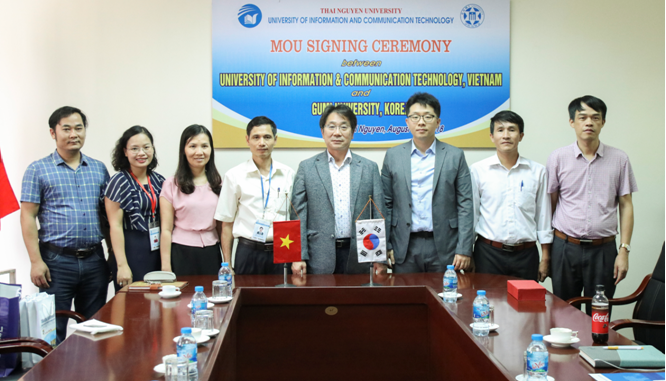

Since 2019, ICTU has continuously cooperated with Kyungpook National University (KNU), South Korea to open a 3+1 joint training project “The Twinning Undergraduate Programme in Software Engineering”. Taking part in this programme, students will study the first three years at ICTU campus and the last year at KNU campus. Gradudate students will be conferred two bachelor degrees: Bachelor in Computer Science and Engineering by KNU and Bachelor in Software Engineering by ICTU. To train highly qualified bachelors in the field of Computer Science and Engineering conferred the bachelor degree in Computer Science and Engineering by Kyungpook National University; and to provide Thai Nguyen province in particular and the northern midland and mountainous provinces in general with human resources of ethical quality, capacity and high qualifications to meet the needs of modernization of Vietnam.
In the context of robust development of information and communication technology (ICT) in the world, the Politburo has determined in Directive No. 58/CT-TW dated on October 17, 2000 “Information technology is widely applied in in all fields, has become one of the most important factors of socio-economic development and ensuring of national security and defense”. The Vietnamese Communist Party and the State have had many policies to develop information technology (IT) and telecommunications, in which training IT human resources is very important and urgent. Approved by the Government, Ministry of Education and Training (MoET) issued Decision No. 6946/QĐ-BGDĐT-TCCB dated on December 14, 2001 on the establishment of Faculty of Information Technology (FIT) under Thai Nguyen University (TNU). The campus in Quyet Thang Commune, Thai Nguyen City is the location of the current University of Information and Communication Technology (ICTU).
FIT is the first institution implementing the cooperation model between universities and research institutes; FIT staff consists of 23 people, in which, 10 scientists from Institute of Information Technology under the Vietnam Academy of Science and Technology, 13 lecturers from the Center for Informatics under Thai Nguyen University of Technology and Faculty of Mathematics under Thai Nguyen University of Education. Leaders during this initial stage included: Professor. Bach Hung Khang – Director of Institute of Information Technology – Dean, Assoc. Prof. Pham Viet Binh – Standing Vice Dean, Dr. Pham Tran Nhu – Secretary of the Party Committee of Institute of Information Technology – Vice Dean, Dr. Vu Manh Xuan – Vice Dean.
After 20 years of construction and development (2001-2021), ICTU has basically completed the mission of a higher education institution. The university was awarded the Certificate of Merit from the MoET “For outstanding achievements in the process of building and developing the unit, on the occasion of its 20th anniversary”, the Emulation Flag of Thai Nguyen province (2021), and Emulation flag of Vietnam Education Union (2021). The university’s brand is evaluated and recognized by noble awards, evidenced by more than 30,000 bachelors, engineers, masters, and doctoral graduates from all regions of the country, contributing to the cause of building the country, enriching the homeland. Continuing to promote the good tradition of unity, creativity, innovation and achievements, all staff and employees of the university have entered a new stage of integration and development with the spirit of decisively winning!